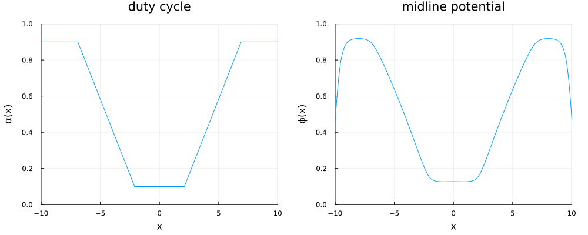
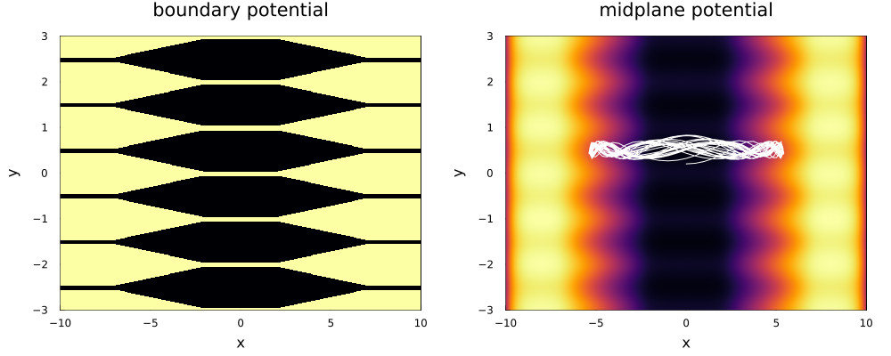

4. Ion trajectories
In this example we compute the trajectories of ions in a planar electrostatic trap.
using Plots
using Plots.Measures
using uESTplanar
using DifferentialEquations
using Interpolations
# Useful function
"""
square_wave(x, α)
Return the value of a square wave at `x` with duty-cycle `α` and unit period.
"""
function square_wave(x, α)
mod(x + 0.5α, 1.0) < α ? 1.0 : 0.0
end
# Define electric field component of interest
z = 0.5
xs = range(-10, 10; step=0.01)
ys = range(-5, 5; step=0.01)
ker_pot = KernelConvolution(
xs,
ys,
(x, y) -> K(x, y, z) + K(x, y, 1 - z)
)
ker_Ef = KernelConvolution(
xs,
ys,
(x, y) -> [
-∂xK(x, y, z) - ∂xK(x, y, 1 - z),
-∂yK(x, y, z) - ∂yK(x, y, 1 - z)
],
2
)
# Define the boundary potential
λ = 1
duty_cycle = x -> clamp(abs(x / 6) - 0.25, 0.1, 0.9)
f = (x, y) -> square_wave(y / λ, duty_cycle(x))
fmat = f.(ker_Ef.xs, ker_Ef.ys')
# Compute potential & electric fields
pot_mat = ker_pot(fmat)
E_field_mat = ker_Ef(fmat)
# Interpolate
pot_interp = cubic_spline_interpolation((xs, ys), pot_mat)
Ex_interp = cubic_spline_interpolation((xs, ys), E_field_mat[:, :, 1])
Ey_interp = cubic_spline_interpolation((xs, ys), E_field_mat[:, :, 2])
# Define ODE function
function F(du, v, u, p, t)
x, y = u
du[1] = Ex_interp(x, y)
du[2] = Ey_interp(x, y)
end
# Define callback to terminate ODE when the ion is out of bounds
cb = VectorContinuousCallback(
(out, u, t, integrator) -> begin
x = u[3]
y = u[4]
margin = 0.2
out[1] = x - (xs[begin] + margin)
out[2] = x - (xs[end] - margin)
out[3] = y - (ys[begin] + margin)
out[4] = y - (ys[end] - margin)
end,
(integrator, idx) -> terminate!(integrator),
4
)
# Define & solve ODE problem
u0 = [0.0, 0.2]
du0 = [1, 0.0]
tspan = (0.0, 500.0)
prob = SecondOrderODEProblem(F, du0, u0, tspan, callback=cb)
sol = solve(prob, DPRKN6())
# Compute ODE solution for a range of different times
ts = range(tspan..., 1000)
pos = stack(sol(t)[3:4] for t ∈ ts)
